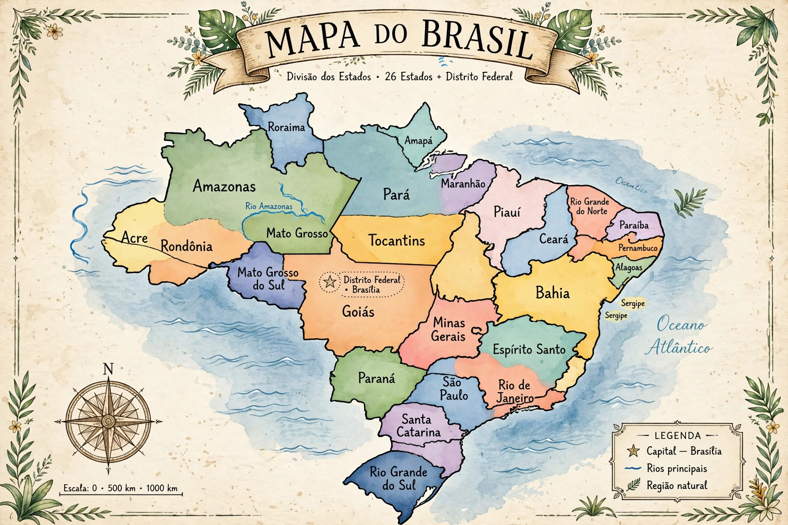

List of state capitals in Brazil
| Capitals of Brazil | |
 | |
| States | 26 |
|---|---|
| Federal District | Brasília (national capital) |
Brazil is a federation of 26 states and the Federal District, each with its own capital city. Brasília, in the Federal District, is also the national capital. The following is a list of the state capitals.
| State | Capital |
|---|---|
| Acre | Rio Branco |
| Alagoas | Maceió |
| Amapá | Macapá |
| Amazonas | Manaus |
| Bahia | Salvador |
| Ceará | Fortaleza |
| Espírito Santo | Vitória |
| Goiás | Goiânia |
| Maranhão | São Luís |
| Mato Grosso | Cuiabá |
| Mato Grosso do Sul | Campo Grande |
| Minas Gerais | Belo Horizonte |
| Pará | Belém |
| Paraíba | João Pessoa |
| Paraná | Curitiba |
| Pernambuco | Recife |
| Piauí | Teresina |
| Rio de Janeiro | Rio de Janeiro |
| Rio Grande do Norte | Natal |
| Rio Grande do Sul | Porto Alegre |
| Rondônia | Porto Velho |
| Roraima | Boa Vista |
| Santa Catarina | Florianópolis |
| São Paulo | São Paulo |
| Sergipe | Aracaju |
| Tocantins | Palmas |
Notes
In several states the capital is not the largest city: in Espírito Santo, for example, Vila Velha has more inhabitants than the capital Vitória. Palmas (Tocantins, founded 1989) and Brasília (inaugurated 1960) are planned capitals created in the 20th century.
Recreated from memory as a standalone page.